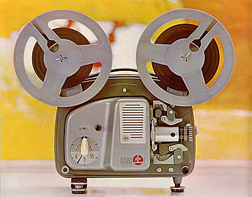
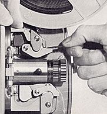
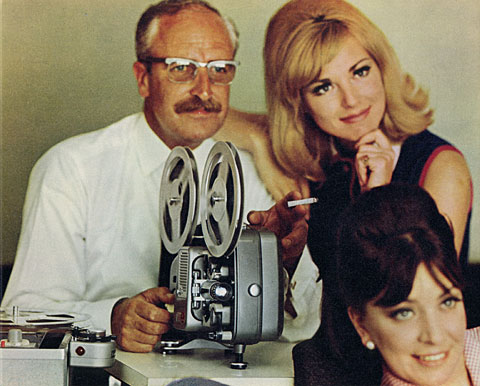

BOLEX 18 - 5 Auto
8mm Projector
1963
- OVERALL DIMENSIONS: 10 1/2" x 8 1/2" x 6 1/2"
- WEIGHT: 15 1/4 lbs.
- CONSTRUCTION: Cast aluminum; Two-tone grey finish; Carrying handle; Detachable cover.
- REEL CAPACITY: Reel arms accommodate 400 ft reels. Both reel arms fold downward for storage.

THREADING: Automatic threading device feeds the film into position and forms the loops to the correct length; Manual threading and unloading possible, if desired. Lens assembly pivots outward for cleaning of gate and unloading of film.- POWER: Two versions: 1) 50 cycle 110-240v AC power; 2) 60 cycle 110-125v AC power.
- LAMP: 8 volt, 50 watt lamp. Modern replacement: CXR 8V/50W
- LENS: Interchangeable lenses; Originally supplied with a choice of Bolex Hi-Fi f/1.3 lenses of 15mm or 20mm focal length or with the Bolex Hi-Fi f/1.3 12.5-25mm zoom lens.
- VARIABLE SPEED: 18 and 5 frames per second; 18fps reverse projection; Rapid motor rewind. Forward or reverse motion with lamp switched off at 18fps.
- OTHER FEATURES: Bolex anamorphic lens is easily attached to built-in holder for widescreen projection; Framing knob adjusts the claw for vertical alignment in the gate; Front leg for height adjustment and rear legs for leveling; Variable shutter automatically changes from three to nine blades when projection drops to 5fps; Catathermic filter preserves the film from excessive heating; A table lamp can be attached which switches off when the projector is running and relights again when stopped.

Notes and Comments
The 18-5 Automatic featured auto threading of film through the gate and sprockets, but otherwise incorporated the same design of the original 18-5 projector.
The speed selector knob, on this and later 18-5 models, was changed from red colored plastic to luminous plastic ("glow in the dark"). A choice of lenses was available at purchase, and a plastic zipper cover and Bolex 400' plastic reel with case were included.
Serial Numbers and Dates of Manufacture
The serial number on 18-5 Automatic projectors is located on the bottom of the base, directly behind the front leg; it can be used to determine the year in which it was manufactured. The table below lists the range of serial numbers allocated to the production run of both 50 Hz and 60 Hz variations of the "automatic" threaded 18-5 projector.
| # | Year | ||
|---|---|---|---|
| 1389701 | — | 1406000 | 1963 |
| 1406000 | — | 1447000 | 1964 |
| 1447000 | — | 1465000 | 1965 |
| 1465000 | — | 1475000 | 1966 |
| # | Year | ||
|---|---|---|---|
| 2088501 | — | 2093000 | 1963 |
| 2093000 | — | 2110000 | 1964 |
| 2110000 | — | 2120000 | 1965 |
| 2120000 | — | 2125000 | 1966 |